来源：https://tue99hylfd.feishu.cn/docx/ElgYdULtooxDeYxnExmcJTmDnwh
之前有同学遇到这个问题：本地部署ollama来跑deepseek，但是从后台看CPU利用率百分百而GPU（即显卡）利用率不足1%，且本地输出的deepseek输出较慢，一段对话一个字一个字蹦，没有完全利用好本地的显卡资源。本篇基于这个情况给出从CPU切换GPU的解决方案，同时对于需要本地使用Deepseek的同学给出Ollama的部署教程。（两篇教程合并到一篇写了）
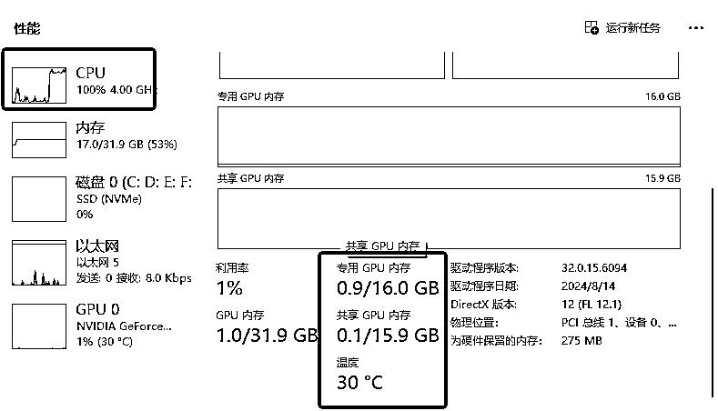
注意：本篇对于非程序员群体算进阶教程，过程不复杂，需要耐心照着教程走即可实现，但要求电脑为N卡配置，且内存够用能跑本地AI，教程参考前请先确认自己的电脑配置情况，优先确认自己的显卡是否在ollama支持的列表内（见下图），支持才能用GPU算力资源（本人电脑配置为AI电脑的基础配置：显卡NVIDIA 4060ti 16g+CPU intel i5-12400F+32g运存+2t固态内存用来放各类模型工具，跑SD/comfyUI/本地大模型8b及以下均流畅 ）
指路：看ollama部署跳到第三步，需要切GPU跳第四步，新手可按顺序阅读。
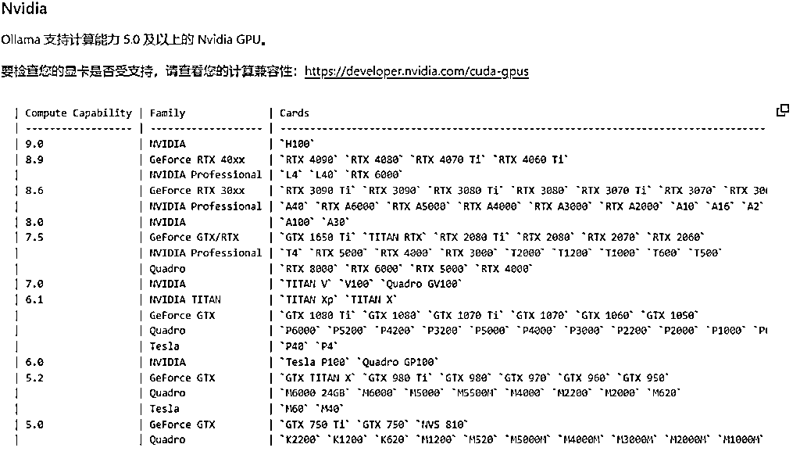
为什么要做本地部署？
本地部署的优缺点
如何判断自己要不要用到本地部署？
三步走：
第一步：官网下载ollama
1.操作：点击页面“Download”按钮。根据自己的操作系统选择下载版本，例如Windows系统，下载“OllamaSetup.exe”文件到本地盘（不要放C）
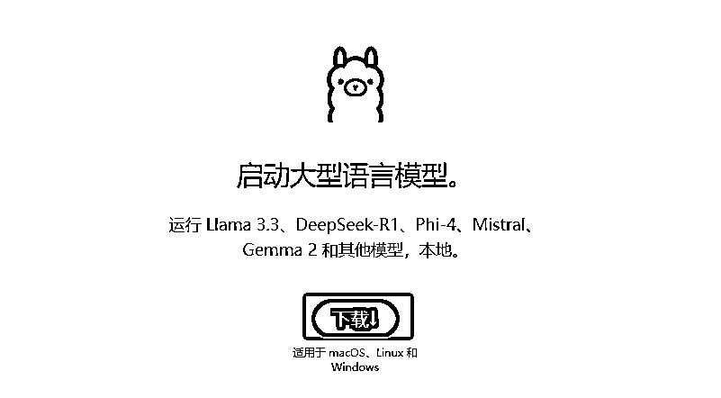
2.安装到本地：下载完成后，双击“OllamaSetup.exe”文件开始安装。点击“Install”开始安装过程，按照提示完成安装。
3.打开cmd对话框：按住电脑快捷键win+R，弹窗输入【cmd】然后回车，打开的黑色页面为【命令提示符】页面，我们所有操作都在这个黑色页面执行
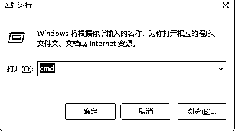
4.验证是否安装成功：在“命令提示符”中输入“ollama”，按回车键，如果看到相关输出，说明Ollama已正确安装。
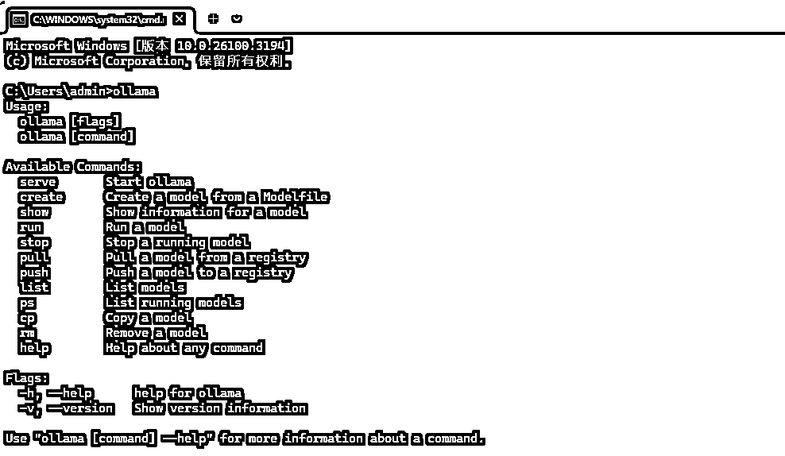
第二步：装模型进来到ollama里面
打开ollama官网，找到一个可以用的模型（这里拿deepseekr1最小的蒸馏模型1.5b举例，看自己电脑配置，b前面 的数字*2就是你运存最大能运行的模型大小，比如我的运存为16g，那么7B模型是可以本地跑的：7*2=14<16）
1.点击官网左上角的models
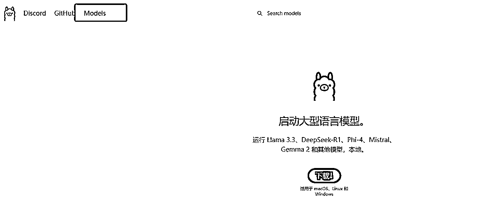
2.点击DeepseekR1进入模型选择界面
3.选模型：默认给的是7b，下拉框选择1.5b的版本，然后复制右边的下载代码
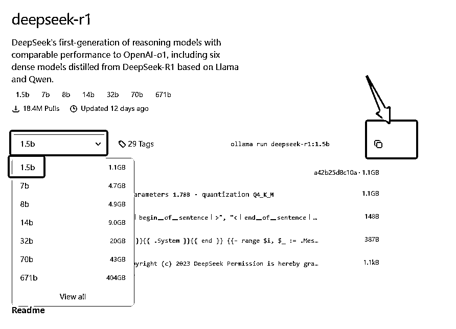
4.回到黑色框里面，粘贴这个代码敲回车，出现最下面的下载进度条，就说明模型从ollama官网下载下来了，等待下载完成
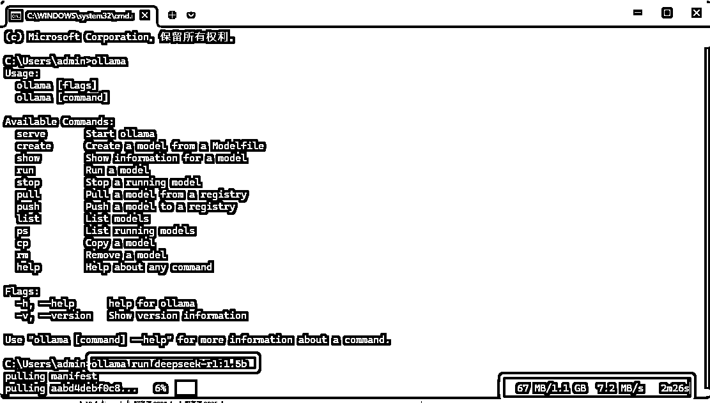
5.下载完成后，刚刚复制的代码，重新贴进去，等待一会就可以直接在框内和模型对话了
6.常见的一些操作名称（不记得就输入ollama，表里会给常用的操作指令）
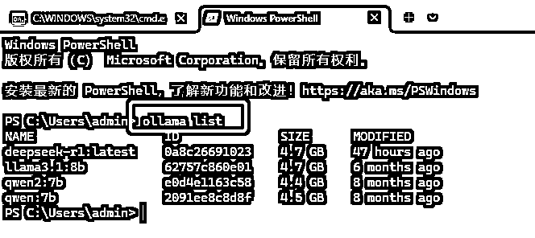
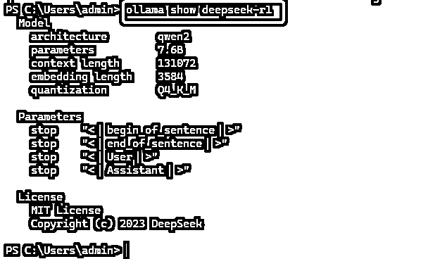
当你已经学会熟练使用ollama的时候，可能就会遇到一开始我说的问题，明明电脑性能超强，但是输出就是一句一句的不连贯，这个时候检查后台任务管理器发现，GPU根本没跑，跑的全是cpu的算力资源，而且CPU占用拉满到100%，这个时候我们就需要CUDA工具切回GPU。
CUDA可以理解为是英伟达的专属显卡工具，可以用来加速游戏，管理显卡运行的，这里我们要让ollama用上GPU，就需要CUDA辅助。
第一步：安装cuda toolkit
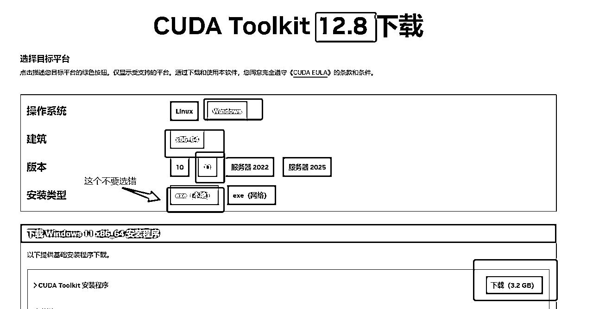
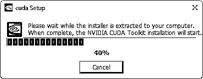
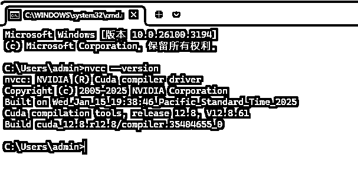
第二步：设置系统变量
系统变量类似于告诉电脑，走这里跑gpu更快，相当于给用gpu开了个传送门，如果不开这个传送门，ollama默认用的是cpu的算力资源

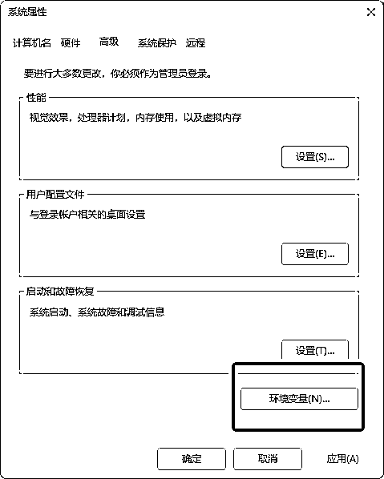
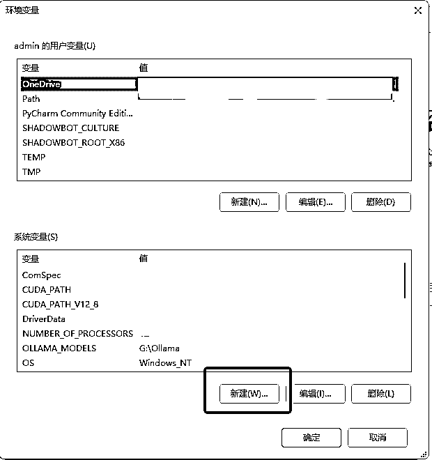
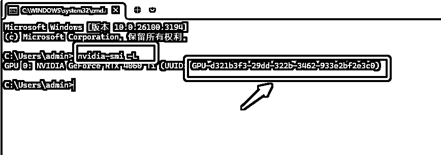
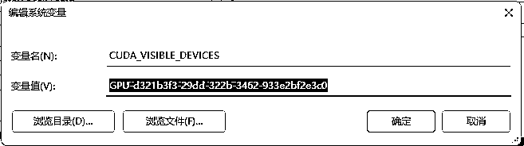
第三步：验证大模型是否在跑gpu